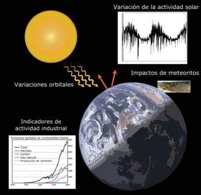

¿QUÉ ES EL CAMBIO CLIMATICO?
El cambio climático se define como la variación en el estado del sistema climático terrestre, formado por la atmósfera, la hidrosfera, la criosfera, la litosfera y la biosfera, que perdura durante periodos de tiempo suficientemente largos (décadas o más tiempo) hasta alcanzar un nuevo equilibrio. Puede afectar tanto a los valores medios meteorológicos como a su variabilidad y extremos. Los cambios climáticos han existido desde el inicio de la historia de la Tierra, han sido graduales o abruptos y se han debido a causas diversas, como las relacionadas con los cambios en los parámetros orbitales, variaciones de la radiación solar, la deriva continental, periodos de vulcanismo intenso, procesos bióticos o impactos de meteoritos. El cambio climático actual es antropogénico y se relaciona principalmente con la intensificación del efecto invernadero debido a las emisiones industriales procedentes de la quema de combustibles fósiles. Los científicos trabajan activamente para entender el clima pasado y futuro mediante observaciones y modelos teóricos. Para ello recopilan un registro climático del pasado remoto de la Tierra basado en la evidencia geológica a partir de sondeos geotécnicos de perfiles térmicos, testigos de hielo, registros de la flora y fauna como crecimiento de anillos de árboles y de corales, procesos glaciares y periglaciares, análisis isotópico y otros análisis de las capas de sedimento y registros de los niveles del mar del pasado. Cualquier variación a largo plazo observado a partir de estos indicadores (proxies) puede indicar un cambio climático. Los modelos de circulación general se utilizan a menudo en los enfoques teóricos para intentar reconstruir los climas del pasado, realizar proyecciones futuras y asociar las causas y efectos del cambio climático. Forzantes internas y externas del sistema climático terrestre Los factores externos que pueden influir en el clima son llamados forzamientos climáticos. Los forzamientos climáticos son factores que inciden en el balance de energía del sistema climático, modificando la cantidad de energía que el sistema recibe del Sol o la cantidad de energía que el sistema pierde por emisión desde la Tierra al espacio exterior. Los climatólogos que estudian el cambio climático actual, suelen denominarlos forzamientos radiativos y consideran básicamente cuatro de ellos: la cantidad de la radiación solar en lo alto de la atmósfera (constante solar), el albedo terrestre, la concentración de gases de efecto invernadero y la concentración de aerosoles tanto de procedencia natural, como son los procedentes de erupciones volcánicas, como los de origen antropogénico que proceden de actividades humanas, entre otros.
Los paleoclimatólogos, sin embargo, consideran como forzamientos climáticos externos un rango mucho más amplio de fenomenología extraterrestre que incluyen las variaciones en los parámetros orbitales de la Tierra o la caída de meteoritos. Las variaciones orbitales, por ejemplo, cambian la distribución geográfica y estacional de la radiación solar pero apenas modifican el balance de energía planetario, es decir, no constituyen un forzamiento radiativo relevante. Precisamente, uno de los objetivos de climatólogos y paleoclimatólogos es entender qué mecanismos amplificadores inducen estas variaciones orbitales para explicar los diferentes ciclos glaciales que se han producido en la historia de nuestro planeta. En cuanto a los procesos internos, desde el punto de vista climatológico se estudia principalmente la variabilidad natural dentro del mismo sistema climático que no provoca cambios en el balance radiativo de la atmósfera. Esta variabilidad se produce como resultado de la interacción dinámica entre la atmósfera y el océano típicamente en escalas temporales de unos años a unas pocas décadas. Los fenómenos más conocidos de esta variabilidad interna son la circulación termohalina y ENSO (El Niño). Así, por ejemplo, los años El Niño, como 1997, se corresponden con temperaturas globales por encima de la media. Los paleoclimatólogos añaden a los procesos internos aquellos inherentes a la dinámica planetaria que afectan al clima. Estos incluyen la orogénesis (formación de montañas), tectónica de placas, vulcanismo y cambios biológicos a largo plazo, como la evolución de las plantas terrestres. La tectónica de placas junto a la erosión, por ejemplo, puede contribuir, mediante el Ciclo Geoquímico Carbonato-Silicato, al secuestro de CO2, disminuyendo la cantidad de gases de efecto invernadero y disminuyendo por tanto la temperatura global. El vulcanismo masivo y constante devuelve a la atmósfera el dióxido de carbono secuestrado en el manto por los procesos de subducción. Estos procesos actúan en periodos geológicos de entre decenas de miles a varios millones de años.